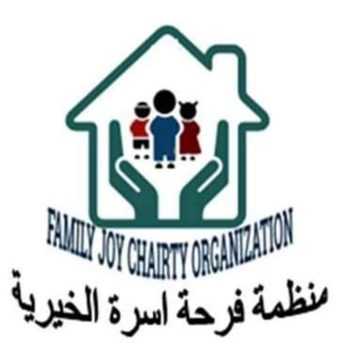

منظمة خواطر (جيش الإحسان)
المنظمة تحمل فكرة وتوجه الملهم والأب الروحي : أ.أحمد بن مازن الشقيري وهي فكرة
الإحسان في شتى مجالات
الحياة .
المنظمة عضو رسمي في رابطة الجهود الدولية والتطوعية بكندا وتتخذ من هدفها ((إستدامة الإحسان لكرامة
الإنسان)) دستور حياة وخارطة طريق .
*متى كانت البداية؟
بدأت الفكرة يوم 8/8/2011 وستستمر ان شاء الله إلى ما شاء اللهجيش إحسان أو الإسم الرسمي ( منظمة خواطر
التطوعية ) هي منظمة تعمل في مجالين أساسيين :
كفالة الأيتام
حفر الآبار
*حملاتنا السابقة :
وحملاتنا حسب الحاجة
مثلا : حملة (#حتوصلي ) كانت حملة كبيرة في ( الميناء البري ) بداية الثورة عند طلوع القرار المفاجيء
لإخلاء الجامعات ، جيش إحسان تكفل بتذاكر سفر الطالبات وتوصيلهم لولاياتهم المختلفة ،، الحملة شملت ١٤
ولاية و ٢٥ مدينة و ٣٥ متطوع و استغرقت ٤ أيام من الرابعة فجرا وحتى ال١٢ منتصف الليل والتبرعات تجاوزت
٢٠٠ ألف جنيه سوداني ، كانت ملحمة ضخمة وبمساعدات مختلفة من ماء وعصير وأكل وغيره للطالبات وهذا كان
بالتعاون مع تطبيق تذكرتي وإدارة الميناء البري
حملة معقم إحسان و كانت بداية جائحة كورونا ، جيش إحسان أنتج و وزّع معقمات للمستشفيات ومراكز العزل (
بالتعاون مع مبادرة صيادلة السودان للتركيبات) للمساعدة في التصدي
للجائحة.
*ما هو مشروعنا الحالي؟
مع إقتراب العيد وما يسمى ب (العيد الكبير) ، قرر جيش الإحسان أن يرسم الابتسامة على وجوه الأطفال
المحتاجين لاسيما اليتامى ، وأن يجمع التبرعات لكسوتهم ، فلتكن جزءا من جيشنا والله يضاعف الأجر لمن
يشاء .
*ثم ماذا ؟
تتواصل جهودنا ونطمع في زيادة الأجر وتثبيت الإيمان في قلوبنا بحب مساعدة الغير ، الخريف يطرق الأبواب
والكثيرون يحتاجون لتأمين منازلهم لتنجو أرواحهم ، ألا تحب أن يفرج الله همومك، وكربك ؟ ألا تحب أن تكون
ممن أطفأ غضب الله بالصدقة ، فلنسارع الى جمع التبرعات للحالات المحتاجة ، والله يضاعف لمن يشاء.
*

منظمة فرحة أسرة الخيرية
تهتم المنظمة بعمل مشاريع إستثمارية صغيرة للأسر الفقيرة.
*متى انطلقنا ؟
تم إنطلاقها كمبادرة في شهر نوفمبر -2017 وحققنا الكثير من الإنجازات .
*جزء من إنجازاتنا :
تم توفير مشاريع لعدد من الاسر في مختلف أنحاء الولاية ، كما تم دعم وتوزيع كيس الصائم في رمضان، وكذلك
توزيع ملابس شملت داخل وخارج الخرطوم ولا نزال نستلم ملابس ويتم توزيعها
*أهدافنا :
1/بنشتغل على الأسر المحتاجة وما عندها قوت يومها
2/بنتأكد من مصداقية أي حالة قبل ما نساعدها بغض النظر عن ثقتنا في الزول المسؤول من الحالة
3/بعد التأكد بنحاول نوفر احتياجات الأسرة من كهرباء وغاز وطعام وعلاج بعد داك نعمل ليهم مشروع تجاري
كمصدر دخل
4/بنرتب الحالات حسب الحوجة والزمن
5/الحالات يتم عرضها عن طريق المشرف .
6/التبرعات في الخاص أو العام حسب رغبة المتبرع
7/عندنا اشتراكات شهرية لأصحاب المرتبات حسب الاستطاعة.
*من الأعمال الحالية:
*حاله إنسانية*
*رقم( 79)
هدي أرملة تسكن جبل أولياء أراضي الجيش..في منزل والدها .. توفي الزوج وترك لها بنتين في مرحلة
الأساس..هدي تعاني من الروماتيزم تحتاج ل علاج شهري.
تحتاج مشروع للمساعده ف المعيشه.
*المشروع*( عمل الطعميه)
تكلفة المشروع 40 الف ج
_ساعدوهم بالعندكم وما نقص مال من صدقة.
* ما نطمح له:
مساعدة كل من يحتاج للرزق الحلال ، وتسهيل الطرق للمشاريع الصغيرة بإذن الله ومشيئته ، و التركيز على من
هم أحوج لها ، تقبل الله منا ومنكم الصدقات وجعلها فرج لكل بلاء ، نحتاج الى دعمكم وما نقص مال من صدقة
مشروع الإطعام
يقام المشروع عادةً في خلاوي تحفيظ القرآن الكريم حيث يتم إعداد وجبة طعام لطلاب تلك الخلاوي، و يتم
تحديد خلوة معينة بعد دراسة حالتها وعددية الطلاب بها و مدى حوجتها و يصاحب الإطعام يوم علاجي لطلاب
الخلوة المعنية و توفير الأدوية و نظام الاحالة للمستشفيات، كما يقام برنامج ترفيهي مصاحب لطلاب الخلاوي
و يصاحب المشروع دراسة لبيئة تلك الخلاوي والعمل على تحسنيها وتطويرها من أجل راحة الطلاب.
منظمة تكافل الخيرية
نشأت المنظمة بصورة غير منتظمة من الطلاب لسد حوجة الطلاب المعسرين ،ثم
انتظمت بصورة غير رسمية تحت اسم
جمعية الأسر المتعففة في عام 1998 ميلادي. و كانت أهدافها الرئيسية هي :
-دفع رسوم التسجيل للطلاب المعسرين.
- تقديم كفالات شهرية له.
- إقامة الإفطارات الرمضانية بالداخليات.
- التكفل بسفر طلاب للأقاليم.
- إعطاء كفالات شهرية للأيتام.
وتم تسجيل المنظمة لدى مفوضية العون الإنساني في عام 2007 م حيث أصبحت تعرف باسم _منظمة تكافل
الخيرية_.
المشاريع الحالية للمنظمة:
*مشروع فرحة العيد*
يعرف المشروع أيضاً ب”كسوة العيد” و يعمل على توفير الملابس و ذلك بعد اعادة ترميمها وترتيبها لتناسب
الأسر المحتاجة. كما يصاحب المشروع برنامج ترفيهي للأطفال و تكريم لأمهات الأيتام و توزيع الأضاحي للأسر
المتعففة
و مشروع *كفالة الأيتام*
تقوم المنظمة بكفالة عدد من أسر الأيتام و تقديم الدعومات العينية الشهرية لهم عن طريق مندوب يُعَيّن من
الطلاب المتطوعين لكل أسرة..
كما أن عدد المكفولين قد تجاوز العشرة الف نسمة!
كما أن هناك مشاريع أخرى موسمية تُنفذ حسب خطط مدروسة. مثل :
- *التسجيل للطلاب المعسرين*
- *برنامج الحالات العلاجية*
- *مشروع الحقيبة الرمضانية*
- *مشروع اليوم الترفيهي للأيتام*
- *مشروع الإطعام*
- *مشروع قدرة سبيل*
كما أن هناك *ثمانية مكاتب رئسية* تهتم بتنظم المشاريع و متابعة سير عملها. و هي :
- ```مكتب السُقيا``` و المسؤول عنه، عمر أحمد التكينة.
- ```مكتب البحث والتطوير``` مسؤول المكتب، ريان طارق.
- ```مكتب الإعلام والعلاقات العامة``` و المسؤول هو، باسل عبد المنعم.
- ```مكتب المالية``` المسؤول هو،معاذ خالد
- ```مكتب المجمعات``` و مسؤولُه،نسيبة عبد الغني.
- ```مكتب الطلاب``` ،صفوة الباشري.
- ```مكتب الطبية``` ،أبرار أحمد
مكتب الأيتام، مصعب نايس.